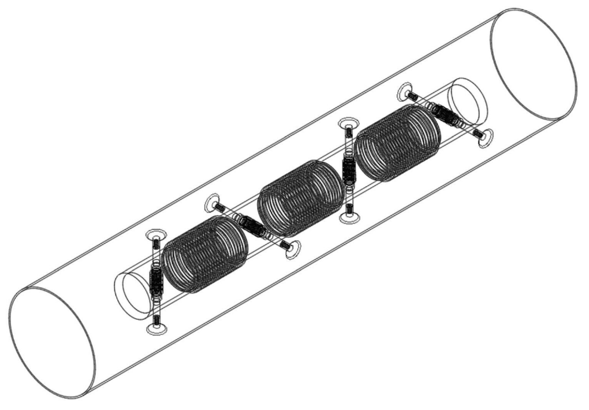
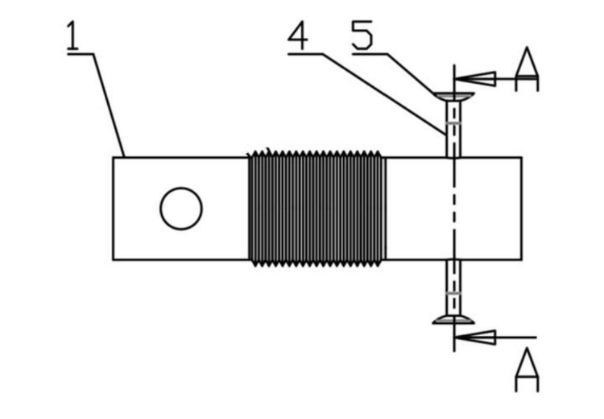
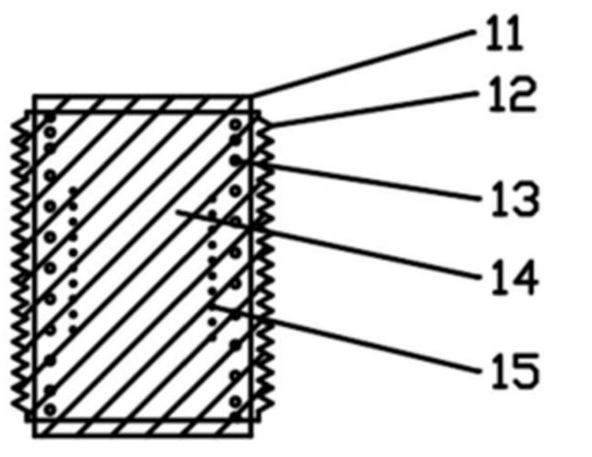
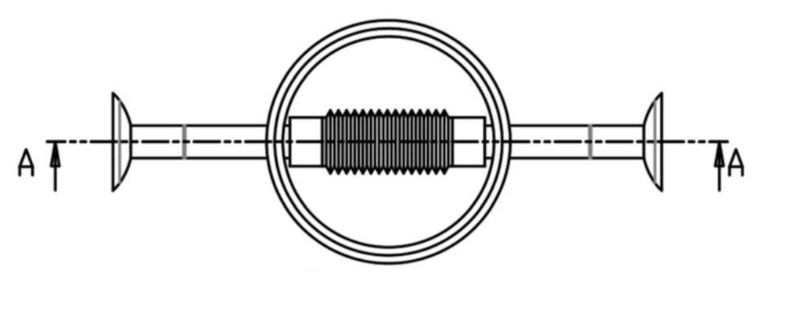

2023–24 · NCUT & BJTU Joint Lab
Electromagnetic Peristaltic Soft Robot for Pipe Inspection基于电磁控制的蠕动式管道软体机器人
Project Goal项目目标
Inspecting the inside of a pipe means fitting a robot into a narrow, curved space where wheels and rigid links struggle. Soft robots adapt to that space better, but each common drive has a drawback: shape-memory alloys respond slowly, pneumatic drives carry heavy valves and tubing, and existing electromagnetic designs are complex and hard to control precisely.
We set out to build a soft pipe robot that:
管道内部检测需要机器人钻进狭窄、弯曲的空间，轮式和刚性连杆结构在这里很难施展。软体机器人适应性更好，但常见的几种驱动方式各有短板：记忆合金响应慢，气动要带很重的气阀和管路，现有的电磁驱动方案结构复杂、难以精确控制。
我们的目标是做一款管道软体机器人，做到：
- Moves by peristalsis (inchworm-style crawling), driven only by the current in its coils.
- 只靠线圈电流驱动，以蠕动方式（类似尺蠖）前进。
- Grips the pipe wall itself, with no external field or tether pulling it.
- 自己撑住管壁，不依赖外部磁场或拖拽。
- Has a simple structure that is easy to assemble.
- 结构简单，容易组装。
- Is modular, so units can be added for longer pipes or to carry other tools.
- 模块化，可以增加单元来适应更长的管道，或挂载其他功能部件。
System Structure系统结构
The robot is a chain of two kinds of module. A walking unit holds two telescopic legs with suction cups that push out against the pipe wall. A center body links two walking units and changes length. The legs of neighbouring walking units are crossed at 90°, so the robot braces the wall in two planes.
机器人由两种模块串联而成。行走单元带两条伸缩腿，腿端装吸盘，向外撑住管壁。中心连接体连接两个行走单元，自身可以伸长和缩短。相邻行走单元的伸缩腿呈 90° 十字交错，在两个方向上同时撑住管壁。
Loading diagram…
图表加载中…


Locomotion Logic运动逻辑
The walking units form two groups that take turns: one group anchors to the wall while the center bodies push or pull the other group forward. Repeating the cycle moves the whole robot along the pipe, as in the simulation above.
行走单元分成两组轮流工作：一组撑住管壁做"锚点"，中心连接体伸缩，把另一组推（拉）向前。循环往复，整机就沿管道前进，过程和上方的模拟视频一致。
Loading diagram…
图表加载中…
Core Methods核心方法
Closed-magnetic-circuit actuator闭合磁路驱动单元
- Both module types use the same actuator: two axially magnetized NdFeB magnets, facing N to S so they attract, joined by a soft-magnetic elastomer. A coil and a spring sit inside the elastomer, and a bellows wraps the whole unit.
- 两种模块用的是同一种驱动单元：两块轴向充磁的钕铁硼永磁体 N–S 相对、相互吸引，中间用软磁弹性体连接；弹性体内嵌线圈和弹簧，外面包一层波纹管。
- The magnets and the soft-magnetic elastomer form a closed magnetic circuit. Current in the coil adds to or subtracts from the magnets' own field, which changes how hard the magnets pull together.
- 永磁体和软磁弹性体组成闭合磁路。线圈通电产生的磁场与永磁体自身磁场叠加，增强或削弱两块磁体之间的吸引力。
- The spring and the elastomer push back. Raising or reversing the current moves the balance point, so the unit contracts or extends. Current size and direction set the stroke and the crawling speed.
- 弹簧和弹性体提供回弹力。改变电流大小或方向，就改变了力的平衡点，单元随之收缩或伸长。电流大小和方向决定伸缩量和爬行速度。
A simplified model for explaining the principle: the field in the gap is the magnets' field plus the coil's; the attraction grows with the field squared; the unit settles where attraction equals the spring and elastomer restoring force.
用于说明原理的简化模型：气隙磁场 = 永磁体磁场 + 线圈磁场；吸引力大致与磁场的平方成正比；单元停在吸引力与弹簧、弹性体回弹力相等的位置。
Loading diagram…
图表加载中…


Soft-magnetic elastomer软磁弹性体材料
- A porous composite: foam silicone loaded with magnetic powder or magnetic fibers. It conducts magnetic flux like iron yet compresses and springs back like a sponge.
- 多孔复合材料：泡沫硅胶中掺入磁粉或导磁纤维。它像铁一样导磁，又像海绵一样能压缩、能回弹。
- We formulated magnetorheological-fluid and magnetic-sponge composites, and moulded the elastomer to different diameters and lengths for the two module sizes.
- 我们配制了磁流变液和磁性海绵复合材料，并用模具把弹性体做成不同直径和长度，分别用于两种尺寸的模块。
Simulation and measurement仿真与测量
- Compared reinforcement designs for the compliant body in COMSOL FEA before building them.
- 先用 COMSOL 有限元仿真比较柔性本体的几种加固方案，再动手制作。
- Measured deformation and locomotion on the bench with camera tracking.
- 在实验台上用相机追踪测量形变和运动。
Bench Test实物测试
Patent专利
Title名称A Peristaltic Pipeline Soft Robot Based on Electromagnetic Control (PRC utility model)
一种基于电磁控制的蠕动式管道软体机器人（实用新型）
Number编号Grant CN 220366121 U · Application 202321674507.6
授权公告号 CN 220366121 U · 申请号 202321674507.6
Dates日期Filed 29 Jun 2023 · Granted 19 Jan 2024
申请日 2023.06.29 · 授权公告日 2024.01.19
Inventors发明人Tang F., Zhang H., Wang C., Cao J., Liu T., Li Z., Yang J.
唐福龙、张翰明、王长宇、曹嘉睿、刘天齐、李泽锋、杨家霁
Holder专利权人North China University of Technology
北方工业大学
My Role我的工作
- Led the 5-member team: set the technical route and split the work.
- 带领 5 人团队：确定技术路线，分配任务。
- Formulated the magnetic composites and built the compliant body.
- 配制磁性复合材料，制作柔性本体。
- Took part in the 3D modelling of the walking units.
- 参与行走单元的三维建模。
- Ran the COMSOL comparisons and the bench measurements.
- 完成 COMSOL 仿真对比和实验台测量。
Limitations局限
- The bench video shows a single actuator unit. The multi-unit crawling sequence is shown as a simulation, with illustrative strokes and timing.
- 实物视频展示的是单个驱动单元；多单元蠕动过程用模拟动画展示，其中行程和时间仅作示意。
- The magnetic force model above is a simplified explanation of the principle, not a fitted model of the prototype.
- 上面的磁力公式是说明原理用的简化模型，不是根据样机数据拟合出来的。